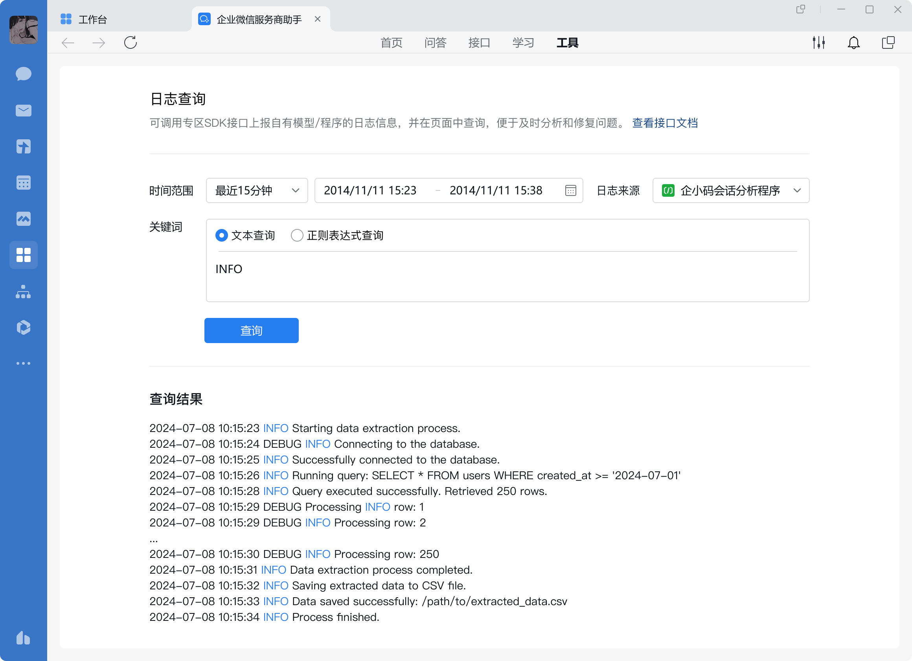

目录
概述
专区sdk提供两种功能：
（1）专区请求企业微信后台sdk：提供用于拉取用户会话id记录、模型分析等功能的接口。
（2）企业微信请求专区程序：程序监听端口，接收到企微后台发起的请求后，利用sdk提供的加解密接口进行验签、解密和构造回包。
SDK版本
目前sdk提供python、c++和java三种语言的版本，可通过这里下载。
Python
使用方式
Python版本sdk目前只支持python 3.6、3.12；
使用前需要安装pycryptodome库：
pip3 install pycryptodome点击复制
sdk文件名为wwspecapisdk.so，使用时可放置于工程目录；
使用时导入代码部分如下：
from wwspecapisdk import WWToSpecHTTPReqDecoder, WWToSpecHTTPRspConstructor, ChatDataSDK, spec_log_info, spec_log_error, spec_log_debug, spec_open_debug_mode点击复制
c++
使用方式
c++版本的sdk包括一个头文件和一个动态链接库：cpp_sdk.h和libWeWorkSpecSDK.so，使用时导入代码部分如下：
#include "cpp_sdk.h"点击复制
sdk依赖openssl3。需要libcrypto.so.3和libssl.so.3
Java
 特别注意
特别注意使用方式
Java版本的SDK包含三个类的源文件：SpecSDK.java、SpecCallbackSDK.java、SpecUtil.java和一个动态链接库libWeWorkSpecSDK.so（与C++版本的内容不同），SDK的配置要点如下：
- 配置SDK：三个类文件需保持包路径com.tencent.wework，即存放在com/tencent/wework目录下。
原因：java native方法的查找会拼接当前包路径作为前缀。以SDK中SpecCallbackSDK类的native方法NewCallbackSDK为例，其包路径为com.tencent.wework，则其注册的native方法签名为Java_com_tencent_wework_SpecCallbackSDK_NewCallbackSDK。因此，在使用SDK时必须维持包结构com.tencent.wework。- 使用时应将动态链接库libWeWorkSpecSDK.so拷贝到Java查找本地库的路径（java.library.path）下或添加本地库查找路径，如
/usr/lib。
该参数可在Java程序内调用System.getProperty("java.library.path")或命令行界面调用java -XshowSettings:properties -version查看
- sdk依赖
openssl3，需要libcrypto.so.3和libssl.so.3
导入代码如下：
import com.tencent.wework.SpecSDK; import com.tencent.wework.SpecCallbackSDK; import com.tencent.wework.SpecUtil;点击复制
专区请求企微后台
请求方式
通过官方提供的sdk接口进行调用，具体参考每个sdk接口定义
请求包
sdk接口请求包为json协议，具体的json协议参考每个sdk接口说明
Python版本
python版本的sdk为每个接口封装了一个调用函数，调用时使用基础参数构造类的实例，之后调用对应成员函数来请求企业微信后台的对应接口。
接口正常调用成功时返回企微后台的回包内容，调用失败时抛出异常。
基础参数列表
| 参数 | 类型 | 说明 |
|---|---|---|
| corpid | str | 授权企业的corpid |
| agentid | int | 应用的agentid，将以这个应用的身份调用 仅当调用上报异步任务结果接口，且该次任务在接受请求时并没有接收到应用的agentid时，可能没有应用的身份，此时填写0即可 |
| ability_id | str | 程序使用的能力id |
| job_info | str | 用于关联异步任务的任务信息，仅当调用上报异步任务结果时必填，具体内容在接受到企微后台发起的请求时获取，参考企微后台调用专区-Python版本-获取请求参数-Python部分 调用其他接口时填写空串即可 |
调用接口示例
例如，希望调用获取会话记录接口时，可以使用如下代码：
req = "{\"cursor\":\"RMTJID\",\"token\":\"NGEJKGOEGJKOEGNEOAGOEGOKEGHOEEEEE\",\"limit\":200}" res = ChatDataSDK(corpid, agentid, ability_id, job_info).sync_msg(req)点击复制
其中，
● corpid、agentid、ability_id、job_info为基础参数；
● sync_msg为接口名称，可以在接口对应的文档中查看；
● req为请求的包体以json的格式转化成str的结果；
● 当接口正常调用成功时，res即为回包的json的内容；当接口调用失败时，接口将抛出异常。
请注意，这里的调用成功/失败指的是发起请求的成功/失败，接口正常返回res时，内容的errcode仍可能不为0。C++版本
C++版本的sdk提供了一个调用函数，通过将请求接口名作为参数传入来区分调用哪个接口。调用时使用基础参数构造类的实例（也可以使用企微后台请求专区时生成的回调类的实例来构造），之后调用Invoke成员函数来请求企业微信后台的对应接口。
基础参数列表
| 参数 | 类型 | 说明 |
|---|---|---|
| corpid | string | 授权企业的corpid |
| agentid | uint32_t | 应用的agentid，将以这个应用的身份调用 仅当调用上报异步任务结果接口，且该次任务在接受请求时并没有接收到应用的agentid时，可能没有应用的身份，此时填写0即可 |
| ability_id | string | 程序使用的能力id |
| job_info | string | 用于关联异步任务的任务信息，仅当调用上报异步任务结果时必填，具体内容在接受到企微后台发起的请求时获取，参考企微后台调用专区-C++版本-获取请求参数-CPP部分 调用其他接口时填写空串即可 |
调用接口示例
例如，希望调用获取会话记录接口时，可以使用如下代码：
std::string req = "{\"cursor\":\"RMTJID\",\"token\":\"NGEJKGOEGJKOEGNEOAGOEGOKEGHOEEEEE\",\"limit\":200}"; int ret = SpecSdk(corpid, agentid, ability_id, job_info).Invoke("sync_msg", req, &rsp);点击复制
其中，
● corpid、agentid、ability_id、job_info为基础参数；
● sync_msg为接口名称，可以在接口对应的文档中查看；
● req为请求的包体以json的格式转化成str的结果；
● rsp为接口正常调用成功时，企微后台的回包内容；
● ret为网络和请求协议层面的返回值，为0时表示接口正常调用成功。
请注意，ret为0时表示没有网络或请求协议层面的失败,调用方需继续检查rsp中的errcode字段。也可以使用回调类的实例进行构造：
// SpecCallbackSDK callback_sdk; int ret = SpecSdk(callback_sdk).Invoke("sync_msg", req, &rsp);点击复制
其中，
● callback_sdk为企微后台调用专区时生成的回调类的实例，用于构造时要求请求解析成功，即callback_sdk.IsOk() == true。
Java版本
基础参数列表
| 参数 | 类型 | 说明 |
|---|---|---|
| corpId | String | 授权企业的corpid |
| agentId | long | 应用的agentid这个应用的身份调用 仅当调用上报异步任务结果接口，且该次任务在接受请求时并没有接收到应用的agentid时，可能没有应用的身份，此时填写0即可 |
| abilityId | String | 程序使用的能力id |
| jobInfo | String | 用于关联异步任务的任务信息，仅当调用上报异步任务结果时必填，具体内容在接受到企微后台发起的请求时获取，参考企微后台调用专区-Java版本-获取请求参数-Java部分 调用其他接口时填写空串即可 |
调用接口示例
例如，希望调用获取会话记录接口时，可以使用如下代码：
SpecSDK sdk = new SpecSDK(corpId, agentId, abilityId, jobInfo); sdk.SetRequest(req); int ret = sdk.Invoke("sync_msg"); String rsp = sdk.GetResponse();点击复制
其中，
● corpId、agentId、abilityId、jobInfo为基础参数；
● sync_msg为接口名称，可以在接口对应的文档中查看；
● req为请求的包体以json的格式转化成str的结果；
● rsp为接口正常调用成功时，企微后台的回包内容；
● ret为网络和请求协议层面的返回值，为0时表示接口正常调用成功。
请注意，ret为0时表示没有网络或请求协议层面的失败,调用方需继续检查rsp中的errcode字段。也可以使用回调类的实例进行构造：
SpecCallbackSDK callback = new SpecCallbackSDK(method, reqHeaders, reqBody); if (callback.IsOk()) { String rspContent = HandleCallback(callback); // 自定义的处理函数 callback.BuildResponseHeaderBody(responseContent); Map<String, String> rspHeaders = callback.GetResponseHeaders(); String rspBody = callback.GetResponseBody(); }点击复制
其中，
● SpecCallbackSDK为企微后台调用专区时生成的回调类的实例，用于构造时要求请求解析成功，即callback.IsOk() == true。
● HandleCallback为用户自定义的回调处理函数，返回String类型的回包数据
企微后台调用专区
用户需要自行监听8080端口（IP使用0.0.0.0）接收企微后台调用专区的请求；收到请求后需要使用本SDK对请求进行验签和解密，处理完成后的回包也需要用本SDK进行加密和签名。
Python版本
验签和解密
收到请求后，需要将请求的header和body放到WWToSpecHTTPReqDecoder中去验签和解密，示例如下：
req = WWToSpecHTTPReqDecoder(headers, post_data)点击复制
其中，
● headers为list格式，示例： [("Accept","/"),("Content-Type","application/json")]；
● post_data为str格式，是请求中的post body数据。
WWToSpecHTTPReqDecoder构造时会对headers进行签名校验，并解密post_data，如果签名/解密失败会抛出异常，此时请使用get_exception_header()接口获取回包的header，参考回包-构造header部分。
获取请求参数-Python
WWToSpecHTTPReqDecoder提供如下成员函数获取请求参数：
def get_corpid(self): return self.corpid def get_agentid(self): return self.agentid def get_data(self): return self.data def get_call_type(self): return self.call_type def get_is_async(self): return self.is_async def get_job_info(self): return self.job_info def get_ability_id(self): return self.ability_id def get_notify_id(self): return self.notify_id点击复制
参数说明如下：
| 参数 | 类型 | 说明 |
|---|---|---|
| corpid | str | 企业corpid |
| agentid | int | 应用agentid |
| call_type | int | 企业微信请求专区类型， 1：企业/服务商通过应用调用程序接口或其他方式对专区发起请求 2：企业微信后台对专区发起回调 |
| data | str | json字符串，具体为应用调用专区时传入的request字段 |
| is_async | bool | 是否是异步调用，仅当call_type参数为1时有效 |
| job_info | str | 任务信息，用于关联异步任务，仅当call_type参数为1，且is_async参数为true时有效 |
| alibity_id | str | 能力id |
回包
回包时可通过WWToSpecHTTPRspConstructor类进行签名和加密，构造示例代码如下：
rsp = WWToSpecHTTPRspConstructor(rsp_data)点击复制
其中，
● rsp_data为回包的内容；
● 构造成功时，rsp为可用于获取请求header和body的类，构造失败时，将抛出异常。
专区程序通过WWToSpecHTTPRspConstructor类获取到对应的header和加密回包内容后，即可用其进行回包。
构造header
调用 get_normal_header() 和 get_exception_header() 可以拿到验签和解密正常返回/抛出异常的情况分别对应的回包header：
header = rsp.get_normal_header() header = rsp.get_exception_header()点击复制
其中，
● header为生成的对应header，为dict格式，用于回包
加密body
调用get_encoded_body()可以获取加密后的回包内容：
encoded_body = rsp.get_encoded_body()点击复制
其中，
● encoded_body为加密后的回包内容，为str格式，用于回包
C++版本
验签和解密
收到请求后，需要将请求的header和body放到SpecCallbackSDK中去验签和解密，示例如下：
SpecCallbackSDK callback_sdk(method, headers, post_data);点击复制
其中，
● method为string格式，表示请求的方法，内容为GET或POST；
● headers为map格式，示例： {{"Accept","/"}, {"Content-Type","application/json"}}；
● post_data为string格式，是请求中的post body数据。
注意，SpecCallbackSDK仅持有headers和post_data的引用，因此需保证headers和body的生存期比SpecCallbackSDK长
构造实例后，通过IsOK()成员函数判断解析是否成功，示例如下：
bool decrypt_success = callback_sdk.IsOk();点击复制
其中，
● decrypt_success为true时，表示签名校验和解密成功，为false时表示失败。
获取请求参数-CPP
SpecCallbackSDK提供如下成员函数获取请求参数：
/* * @description: 获取请求的企业 * @require: 仅当IsOk() == true可调用 * @return: corpid * */ const std::string &GetCorpId() const; /* * @description: 获取请求的应用 * @require: 仅当IsOk() == true可调用 * @return: agentid * */ uint32_t GetAgentId() const; /* * @description: 获取请求的类型 * @require: 仅当IsOk() == true可调用 * @return: 1 - 来自[应用调用专区]的请求 * 2 - 来自企业微信的回调事件 * */ uint32_t GetCallType() const; /* * @description: 获取请求数据 * @require: 仅当IsOk() == true可调用 * @return: 请求数据,根据call_type可能是: * - 企业微信回调事件 * - [应用调用专区]接口中的request_data * */ const std::string &GetData() const; /* * @description: 是否异步请求 * @require: 仅当IsOk() == true可调用 * @return: * */ bool GetIsAsync() const; /* * @description: 获取请求的job_info, * @require: 仅当IsOk() == true可调用 * @return: job_info,无需理解内容, * 在同一个请求上下文中使用SpecSDK的时候传入 * */ const std::string &GetJobInfo() const; /* * @description: 获取请求的ability_id,[应用调用专区]接口时指定 * @require: 仅当IsOk() == true可调用 * @return: ability_id * */ const std::string &GetAbilityId() const; /* * @description: 获取请求的notify_id,用于[应用同步调用专区程序]接口 * @require: 仅当IsOk() == true可调用 * @return: ability_id * */ const std::string &GetNotifyId() const;点击复制
回包
回包时，可以通过调用接受请求时构造的SpecCallbakSDK类的实例的BuildResponseHeaderBody函数获取回包所需的header和加密回包内容，示例如下：
callback_sdk.BuildResponseHeaderBody(rsp, &headers, &encrypted_body);点击复制
其中，
● rsp为string格式，表示希望回包的body内容，当解析失败（即callback_sdk.IsOk() == false时）传入空串即可；
● headers为map格式，包含回包所需要的headers；
● encrypted_body为string格式，包含加密后的rsp字段。
Java版本
验签和解密
收到请求后，需要将请求的header和body放到SpecCallbackSDK中去验签和解密，示例如下：
SpecCallbackSDK callbackSdk(method, headers, postData);点击复制
其中，
● method为String格式，表示请求的方法，内容为GET或POST；
● headers为Map<String, String>格式，示例： {{"Accept","/"}, {"Content-Type","application/json"}}；
● post_data为String格式，是请求中的post body数据。
构造实例后，通过IsOK()成员函数判断解析是否成功，示例如下：
bool decryptSuccess = callbackSdk.IsOk();点击复制
其中，
● decryptSuccess为true时，表示签名校验和解密成功，为false时表示失败。
获取请求参数-Java
SpecCallbackSDK提供如下成员函数获取请求参数：
/** * @description: 获取请求的企业 * @require: 仅当IsOk() == true可调用 * @return: corpid * */ public String GetCorpId(); /** * @description: 获取请求的应用 * @require: 仅当IsOk() == true可调用 * @return: agentid * */ public long GetAgentId(); /** * @description: 获取请求的类型 * @require: 仅当IsOk() == true可调用 * @return: 1 - 来自[应用调用专区]的请求 * 2 - 来自企业微信的回调事件 * */ public long GetCallType(); /** * @description: 获取请求数据 * @require: 仅当IsOk() == true可调用 * @return: 请求数据,根据call_type可能是: * - 企业微信回调事件 * - [应用调用专区]接口中的request_data * */ public String GetData(); /** * @description: 是否异步请求 * @require: 仅当IsOk() == true可调用 * @return: 是否异步请求 * */ public boolean GetIsAsync(); /** * @description: 获取请求的job_info, * @require: 仅当IsOk() == true可调用 * @return: job_info,无需理解内容, * 在同一个请求上下文中使用SpecSDK的时候传入 * */ public String GetJobInfo(); /** * @description: 获取请求的ability_id,[应用调用专区]接口时指定 * @require: 仅当IsOk() == true可调用 * @return: ability_id * */ public String GetAbilityId(); /** * @description: 获取请求的notify_id,用于[应用同步调用专区程序]接口 * @require: 仅当IsOk() == true可调用 * @return: notify_id * */ public String GetNotifyId();点击复制
回包
回包时，可以通过调用接受请求时构造的SpecCallbakSDK类的实例的BuildResponseHeaderBody函数获取回包所需的header和加密回包内容，示例如下：
callbackSdk.BuildResponseHeaderBody(responseContent); Map<String, String> rspHeaders = callbackSdk.GetResponseHeaders(); String rspBody = callbackSdk.GetResponseBody();点击复制
其中，
● responseContent为String格式，表示希望回包的body内容，当解析失败（即callbackSdk.IsOk() == false时）传入空串即可；
● rspHeaders为Map<String, String>格式，包含回包所需要的headers；
● rspBody为String格式，是加密后的responseContent字段。
专区程序的日志打印
在专区的程序与模型可以调用SDK接口打印日志，日志会被自动收集与汇总，开发者可在管理端「数据与智能专区 - 日志查询」中搜索日志。
请更新到最新的SDK，才能调用SDK接口打印日志。
每个程序每小时输出的日志大小不能超过1G，该小时内超过1G后的新增日志将被丢弃。

日志格式说明
格式：<{pid},{tid}>,{datetime},{log_level},{req_id},{file_name},{line_no},{custom}
例如：<94,924>,2024-07-12 18:22:42.795,INF0,c5497e88bce56877,democpp,6
| 字段 | 含义 | 备注 |
|---|---|---|
| pid | 进程ID | |
| tid | 线程ID | |
| datetime | 时间 | 如 2024-07-12 18:22:42.795 |
| log_level | 日志级别，详见日志级别说明 | INFO、ERR、DBG |
| req_id | 请求ID | 由专区sdk生成，每次请求生成一个独立的req_id，方便定位某次请求的日志 |
| file_name | 文件名 | |
| line_no | 行号 | |
| custom | 自定义字段 | 长度限制128字节，超出的部分截断。调用sdk日志接口传入 |
除了 custom ，其他字段由sdk提供的日志接口内部自动生成日志级别说明
在调用sdk打印日志时，开发者可以根据每条日志的重要程度，定义合适的log_level，例如用于调试的日志可以设置为DBG。默认情况下，DBG级别日志仅用于开发者在本地调试时输出到stdout，部署在专区的程序，仅INFO、ERR级别的日志会被收集。开发者可以通过应用调用设置日志打印级别接口修改专区程序的日志级别。
Python版本
from wwspecapisdk import spec_log_info, spec_log_error, spec_log_debug # 支持类似 print 传入可变参数 spec_log_info() # INFO级别 spec_log_error() # ERROR级别 spec_log_debug() # DEBUG 级别点击复制
C++版本
#include "cpp_sdk.h" WWSPEC_LOG_INFO("result=%d,error=%s", ret, err.c_str()); //INFO级别 WWSPEC_LOG_ERROR("result=%d,error=%s", ret, err.c_str()); //ERROR级别 WWSPEC_LOG_DEBUG("result=%d,error=%s", ret, err.c_str()); //DEBUG级别点击复制
Java版本
import com.tencent.wework.SpecUtil // 支持可长参数，默认String类型 SpecUtil.WWSpecLogInfo("xxx"); // INFO级别 SpecUtil.WWSpecLogError("xxx"); // ERROR级别 SpecUtil.WWSpecLogDebug("xxx"); // DEBUG级别点击复制
本地调试指引
详见 专区调试模式-调试说明